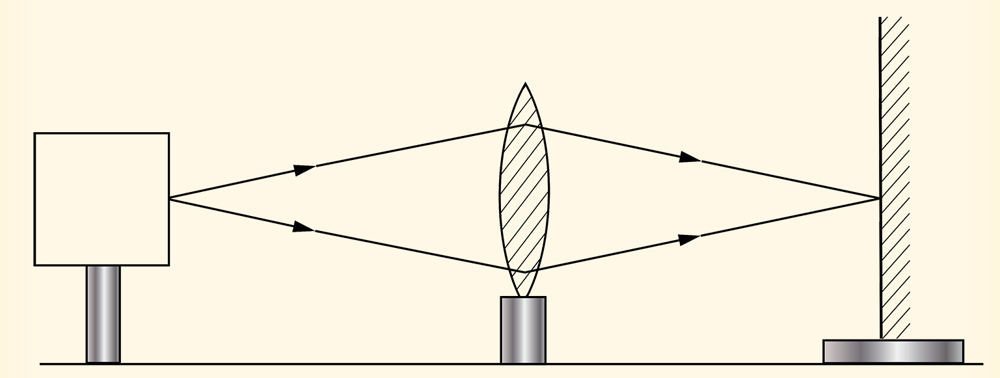

Real-is-positive convention
To determine the values of and using the formula, a sign convention is adopted. The convention is referred to as the real-is-positive convention. When using this convention, all distances are measured from the optical centre. Distances of real objects and real images are treated as positive whereas distances of virtual objects and images are taken to be negative. Because the principal focus of a concave lens is virtual, concave lenses have negative values of focal length.

Activity 5.14
Aim:
To verify the lens equation
Materials:
an illuminated object, screen, metre rule, a convex lens of a known focal length, lens holder, computer or tablet with graphing software
Procedure
1.
Set up the apparatus as shown in the Figure 5.41.

Illuminated object position
Ray Box
Lens
Screen
Metre rule
u
v
Figure 5.41
2.
Place the object and the screen at a reasonable distance apart so that a real image is formed on the screen.
3.
Adjust the lens position along the metre rule until a sharp image is formed on the screen.
4.
Measure the object and the image distances from the lens.
By changing the position of the object, obtain several values of and the corresponding values of .
Record your results in a table like the one shown in Table 5.6.
Physics Form 2 Final.indd 202
03/04/2026 14:22